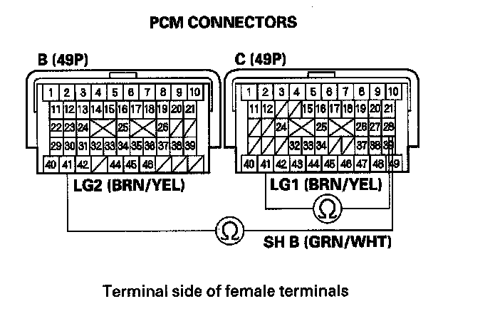
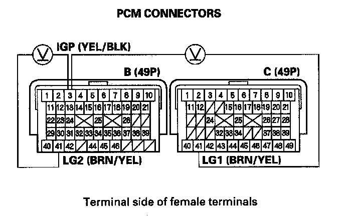
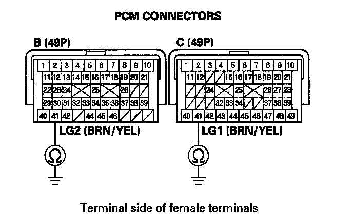

DTC Troubleshooting
DTC P0976: Short in Shift Solenoid Valve B CircuitNOTE:
^ Before you troubleshoot, record all freeze data and any on-board snapshot, and review General Troubleshooting Information.
^ This code is caused by an electrical circuit problem and cannot be caused by a mechanical problem in the transmission.
1. Clear the DTC with the HDS.
2. Test-drive the vehicle for several minutes in the D position through all five gears.
3. Check that DTC P0976 recurs.
Is DTC P0976 indicated?
YES - Go to step 7.
NO - Go to step 4.
4. Choose Shift Solenoid B in the Miscellaneous Test Menu, and test shift solenoid valve B with the HDS.
Is a clicking sound heard?
YES - Go to step 5.
NO - Go to step 7.
5. Test-drive the vehicle for several minutes in the D position through all five gears.
6. Monitor the OBD STATUS for P0976 in the DTCs/Freeze Data in A/T Mode Menu for a pass/fail.
Does the result indicate FAILED?
YES - Go to step 7.
NO - Intermittent failure, the system is OK at this time. Check the SH B wire for an intermittent short to ground between shift solenoid valve B and the PCM. If the HDS indicates NOT COMPLETED, return to step 4 and recheck.
7. Turn the ignition switch OFF.
8. Jump the SCS line with the HDS.
9. Disconnect PCM connectors B (49P) and C (49P).
10. Measure the resistance between PCM connector terminals C28 and C41 or B41.

Is there less than 12 Ohms?
YES - Go to step 11.
NO - Go to step 18.
11. Disconnect the shift solenoid harness connector.
12. Check for continuity between PCM connector terminals C28 and C41 or B41.

Is there continuity?
YES - Repair short in the wire between PCM connector terminal C28 and the shift solenoid harness connector, then go to step 23.
NO - Go to step 13.
13. Inspect shift solenoid valve B. Is shift solenoid valve B OK?
YES - Go to step 14.
NO - Replace shift solenoid valve B or the shift solenoid harness then go to step 23.
14. Turn the ignition switch ON (II).
15. Measure the voltage between PCM connector terminals B3 and B41 or C41.

Is there battery voltage?
YES - Go to step 18.
NO - Go to step 16.
16. Turn the ignition switch OFF.
17. Check for continuity between PCM connector terminals B41 and body ground, and between C41 and body ground.

Is there continuity?
YES - Check for a blown No. 19 fuse in the under-dash fuse/relay box, and check the PGM-FI main relay 1. If the fuse and relay are OK, repair open in the wire between PCM connector terminal B3 and the under-dash fuse/relay box via the main relay, then go to step 23.
NO - Repair open in the wires between PCM connector terminals B41, C41 and ground (G101) or repair poor ground (G101) then go to step 23.
18. Reconnect all connectors.
19. Update the A/T software in the PCM if it does not have the latest software or substitute a known-good PCM.
20. Test-drive the vehicle for several minutes in the D position through all five gears.
21. Check for DTC(s) in the DTCs/Freeze Data in A/T Mode Menu with the HDS.
Is DTC P0976 indicated?
YES - If the PCM was updated, substitute a known-good PCM then recheck. If the PCM was substituted, go to step 1.
NO - Go to step 22.
22. Monitor the OBD STATUS for P0976 in the DTCs/Freeze Data in A/T Mode Menu for a pass/fail.
Does the result indicate PASSED?
YES - If the PCM was updated, troubleshooting is complete. If the PCM was substituted, replace the original PCM. If any other DTCs were indicated on step 21, go to the indicated DTC's troubleshooting.
NO - If the HDS indicates FAILED, check for poor connections and loose terminals at shift solenoid valve B and the PCM. If the PCM was updated, substitute a known-good PCM then recheck. If the PCM was substituted, go to step 1. If the HDS indicates NOT COMPLETED, return to step 20 and recheck.
23. Clear the DTC with the HDS.
24. Test-drive the vehicle for several minutes in the D position through all five gears.
25. Check for DTC(s) in the DTCs/Freeze Data in A/T Mode Menu with the HDS.
Is DTC P0976 indicated?
YES - Check for poor connections and loose terminals at shift solenoid valve B and the PCM, then go to step 1.
NO - Go to step 26.
26. Monitor the OBD STATUS for P0976 in the DTCs/Freeze Data in A/T Mode Menu for a pass/fail.
Does the result indicate PASSED?
YES - Troubleshooting is complete. If any other DTCs were indicated on step 25, go to the indicated DTC's troubleshooting.
NO - If the HDS indicates FAILED, check for poor connections and loose terminals at shift solenoid valve B and the PCM, then go to step 1. If the HDS indicates NOT COMPLETED, return to step 24 and recheck.